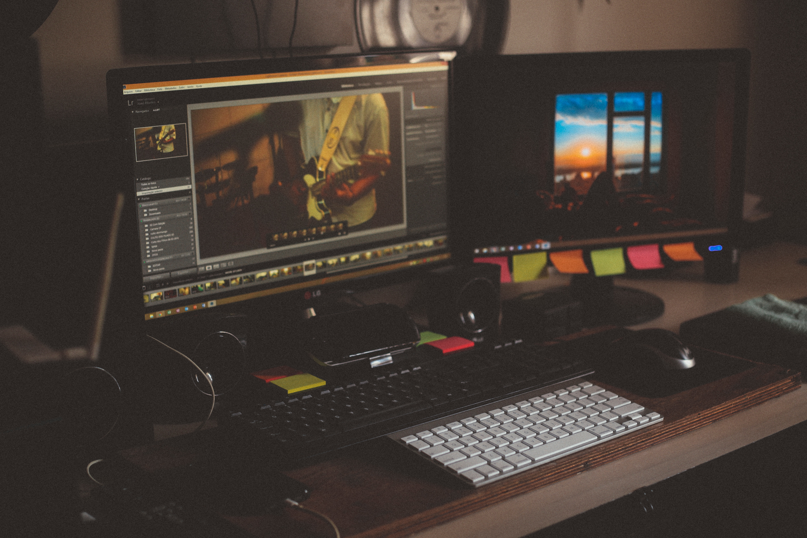

Bienvenue sur mon portfollio où je vais me présenter et vous exposer les principaux projets que j'ai pu faire tout au long de mes études. Bonne lecture ...
Présentation
Photo par Aziz Acharki sur Unsplash.com
Présentation
Je m'apelle Baptiste ALCHAIR, j'ai 20 ans et j'habite à MARIGNIER. Je suis actuellement en train de préparer un BTS SN IR (systemes numériques option informatique et réseau) au Lycée Charles Poncet de CLUSES. J'aimerais à l'avenir intégrer la licence professionelle DIM (Developpeur Informatique Multisupport) en alternance pour l'an prochain.
Expériences professionelles et diplômes
Au cours des trois années passée j'ai travaillé pendant les week-ends, les vacances d'hiver et d'été dans un supermarché où j'occupais diférents postes. Dans le cadre de mon BTS, j'ai aussi effectué un stage en entreprise d'une durée de six semaines chez IFI-Informatique à FILLINGES. Au cour de ce stage j'ai pu m'occuper de tâches multiples tel que du dépannage, montage et instalation de systèmes.
Je suis titulaire du Brevet des collèges, Bac STI2D option SIN (Systèmes informatique et numérique) mention "Bien" ainsi que du Permis B et A2

Photo par João Silas sur Unsplash.com
Autres activités
Mise à part la programation, j'aime pratiquer des activitées de montagne comme la randonée, la via ferrata ou le ski en hiver. J'aime aussi me promener sur internet et participer a des jeux vidéos. Je suis aussi motard et j'aprecie rouler seul ou en groupe et partir en voyage.
Voici le projet qui m'a été confié lors de mon année de terminale. Le but du projet était de concevoir un véhicule motorisé capable de se déplacer sur tous types de terrain grâce à ses chenilles, d'etre contrôlé à distance via une communication bluetooth et une application pour smartphone. Tout cela sera géré par une carte Arduino-Mega. Il devait être aussi capable de détecter un obstacle grâce à un capteur à ultrasons et de sortir d'un endroit sombre en suivant les endroits où la lumière etait la plus forte.
Ma partie du projet consistait à faire communiquer un smartphone et un module bluetooth afin de controler les moteurs grâce à une application sous Androïd.
J'ai donc développé cette application sous "App-inventor" et cela a parfaitement fonctioné. Des flèches sur l'interface permaitaient de diriger le véhicule et un boutton au centre pour le stopper. Un écran permaitait de se connecter au module bluetooth
Ce projet m'a valu la note de 16/20 au BAC.
Projet 2: BTS SN IR "Interface brasserie la rochoise"
Voici une présentation de mon projet de seconde année de BTS. Nous travaillons acctuellement pour une brasserie à LA-ROCHE-SUR-FORON: "La Brasserie la rochoise". Le brasseur nous à demandé d'informatiser les processus de fermentation des bières qu'il produit. Le but est de lui fournir une IHM (Interface Homme Machine) qui affichera le plus d'informations utiles à son travail. Il est prévu un suivi des phases de fermentation, mais aussi un suivi des températures des six cuves qu'il possède et un suivi de la température de la chambre chaude (qui intervient dans la troisiéme fermentation). Le brasseur pourra par la suite aller consulter une base de données pour voir les historiques de tenpératures de fermentations de chaque brassin (biere qui n'as pas encore fini de fermenter).
Tout cela est controlé par trois cartes Raspberry-PI. Une qui sera dans la chambre chaude et qui s'occuperas de contrôler une prise pilotable branchée sur un radiateur afin de maitriser la température de la salle et d'envoyer à la carte superviseur les données de température.
Une autre s'occuperas de récupérer les températures des six cuves de frementations et de les envoyer à la carte superviseur.
Enfin, la carte superviseur s'occuperas de traiter les données de températures ainsi que d'héberger l'IHM Web sur "Apache" et la base de donnée sous "My-Sql". Elle pourra aussi envoyer un signal d'allarme par mail au brasseur si la température d'une des cuves ou de la chambre chaude dépasse un certain seuil.
Ce projet est encore en cours de développement, mais je peux faire une démonstration de ma partie qui est de programmer tout ce que je viens d'ecrire sur la carte superviseur (IHM en Html/Css, Php, Sql) etc...
Voici un de mes projets personels le plus avancé. C'est un site de partage d'idés de "Road-trip à moto ou en voiture nomée "ShareYourTrip". Sur ce site vous pouvez voir sur la page d'acceuil une selection des cinq voyages les mieux notés et vous pouvez contacter leur auteur. Vous pouvez aussi vous créer un compte grace à la "navbar" en haut et avec ce compte vous pourrez poster vos propres voyages. Vous pouvez aussi noter (sur 5) et commenter les voyages des autres. Il y a enfin une "modale" disponible lorsq'on clique sur "le concept" dans la "navbar" qui permet aux nouveaux arrivants de comprendre en quoi consiste ce site web.
Pour cela j'ai utilisé le framework "Bootstrap" pour tout ce qui est graphique ainsi q'un serveur local "XAMPP" pour pouvoir coder en Php. J'ai aussi utilisé une base de donnée sous "MySql" qu m'a permis de stoquer les comptes utilisateurs, les voyages ainsi que les commentaires. Pour finir, j'ai utilisé "Javascript" et "Jquerry" pour la modale et l'esthétique du formulaire permettant d'upload des images pour ses annonces. Ce projet est quasiment terminé mais je trouve toujours des améliorations à ajouter ou à changer afin de le rendre plus fonctionnel.